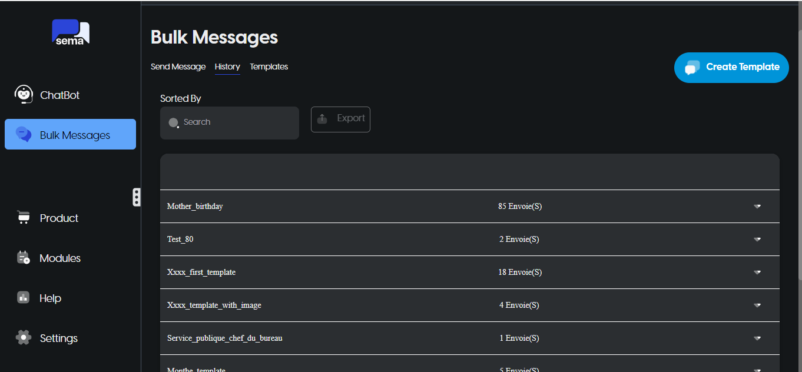
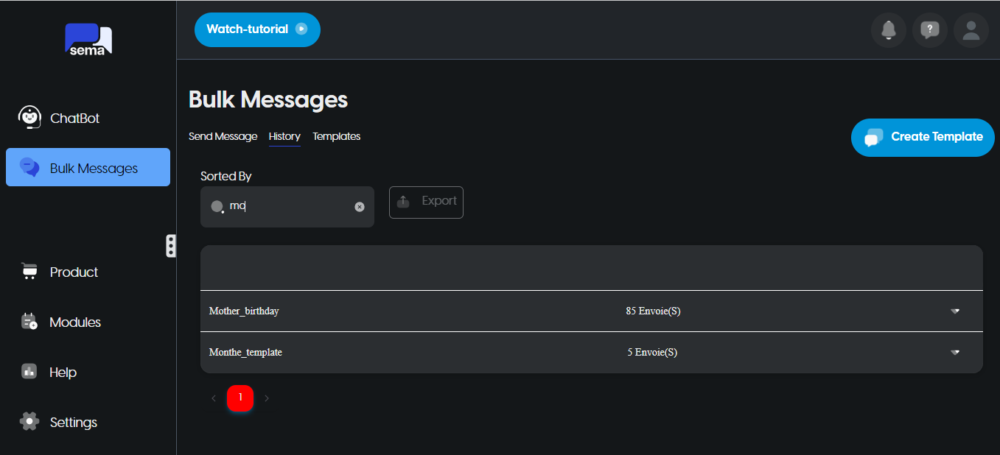
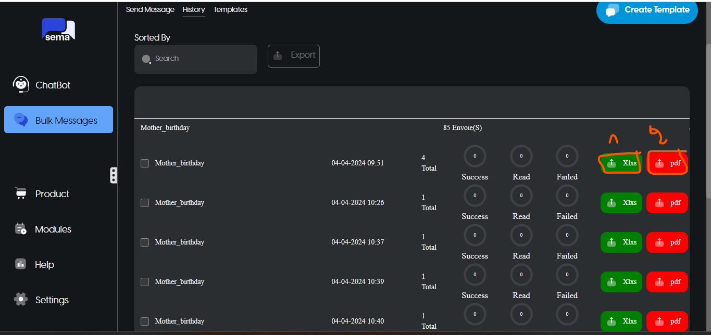
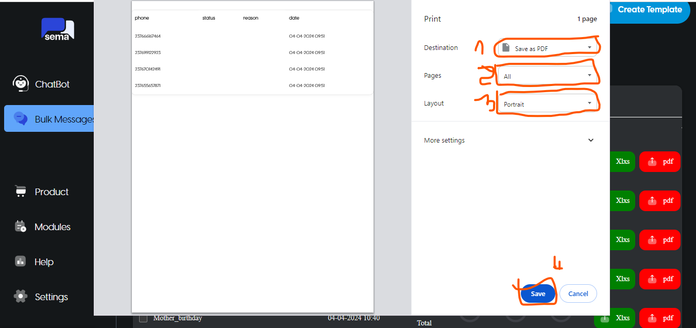

Template de message
Les templates sont utilisés dans les messages modèles pour ouvrir des conversations de marketing, d’utilité et d’authentification avec les clients. Contrairement aux messages de forme libre, les modèles de messages sont le seul type de message pouvant être envoyé aux clients qui ne vous ont pas encore envoyé de message ou qui ne vous ont pas envoyé de message au cours des dernières 24 heures.
Les modèles doivent être approuvés avant de pouvoir être envoyés dans des messages modèles. De plus, les modèles peuvent être désactivés automatiquement en fonction des commentaires et de l’engagement des clients. Une fois désactivé, un modèle ne peut pas être envoyé dans un message de modèle jusqu’à ce que sa qualité s’améliore ou qu’il ne viole plus nos politiques commerciales .
Ce document explique comment utiliser Sema pour gérer les modèles de message WhatsApp
Gestionnaire de modèles
Le gestionnaire de modèles prend en charge les modèles de texte et de médias et possède les fonctions suivantes :
Créer et prévisualiser de nouveaux modèles de messages
Gerer l’historique des modèles de messages
Gérer la liste des templates de message
Quelle est la différence entre un template WhatsApp et une campagne WhatsApp ?
Un template WhatsApp est un message WhatsApp pré-approuvé et réutilisable qui simplifie votre flux de communication. Au lieu de créer un nouveau message chaque fois, vous pouvez utiliser un seul message pour vos campagnes WhatsApp ou vos automatisations. Par exemple, les templates WhatsApp peuvent être utilisés pour envoyer des messages de bienvenue, d’anniversaire ou de feedback, mais également des communications ponctuelles et percutantes telles que des offres exclusives pour le Black Friday ou des soldes d’été alléchants.
Les templates WhatsApp peuvent être personnalisés avec des variables qui s’adaptent automatiquement aux attributs du contact tels que le prénom, l’adresse email ou la date d’anniversaire.
Une campagne WhatsApp consiste à envoyer un template WhatsApp à un groupe de destinataires. Vous décidez qui reçoit votre template WhatsApp, quand il le reçoit et le numéro de téléphone depuis lequel il est envoyé.
Lorsque vous créez une campagne WhatsApp à partir de Sema et que vous choisissez de créer le contenu du message en partant de zéro, celui-ci est automatiquement transformé en template WhatsApp pour utilisation ultérieure. Les templates WhatsApp nécessitent l’approbation de Meta afin d’éviter les spams et garantir une communication de qualité.
Avant de commencer
Assurez-vous d’avoir lié votre compte WhatsApp Business à Sema. Pour en savoir plus, consultez notre article dédié Lier votre compte WhatsApp Business à Sema.
Afin de pouvoir envoyer vos campagnes WhatsApp en dépassant la limite d’envoi quotidienne, assurez-vous d’avoir vérifié votre compte WhatsApp Business. Pour en savoir plus, consultez notre article dédié Faire vérifier votre compte WhatsApp Business. Pour découvrir les meilleures pratiques de création de messages WhatsApp, consultez notre article dédié Meilleures pratiques pour les messages WhatsApp.
4.1.1 Créé un template WhatsApp
Pour créer un modèle de message, cliquez sur le Create Template, bouton bleu de la page Bulk Messages.
Lors de la création de votre modèle, vous devrez inclure les informations suivantes :
-
Nom du modèle
- Le nom ne peut contenir que des caractères alphanumériques minuscules et des traits de soulignement ( _ ).
-
Entête du modèle L’en-tête est facultatif et sert de titre ou d’en-tête de votre modèle. Il prend en charge les éléments suivants :
Texte
Image
Document
Vidéo
-
Contenu du template
- Le corps doit contenir le texte le plus important de votre modèle. Seul le texte est pris en charge.
-
Signature du modèle (Bas de page)
- Le pied de page ne prend en charge que le texte et peut être utilisé pour fournir des informations moins pertinentes dans votre modèle de message.
-
Bouton
Le bouton ajoute de l’interactivité à vos modèles. Il existe deux types principaux.
-
Bouton de réponse rapide
Utilisé pour obtenir des réponses rapides de votre client
Max 3 boutons de réponse rapide par modèle
-
Bouton d’appel à l’action
Utilisé pour envoyer votre client vers un site Web ou appeler un numéro de téléphone
Max une URL et un numéro de téléphone par modèle
-
Une fois que vous avez créé votre modèle, vous pouvez le soumettre pour approbation. Cela peut prendre jusqu’à 24 heures pour qu’une décision d’approbation soit prise. Une fois la décision prise, une notification apparaîtra dans votre Sema Dashboard.*
Si votre modèle de message est approuvé, son statut sera défini sur APPROVED et vous pourrez commencer à l’envoyer aux clients. S’il est rejeté, vous pouvez le modifier et le soumettre à nouveau pour approbation.
4.1.2 Envoi de modèle de message à un numero
Une fois qu’un modèle a été approuvé (il status est défini sur APPROVED), vous pouvez commencer à l’envoyer aux clients
Dans la section Bulk Messages:
- Sélectionnez votre template de message préalablement créé et approuvé par meta;
- cliquez sur
To number; - Choisisez l’initial du pays;
- Entrez le numero du recepteur et cliquez sur le bouton ajouter: vous pouvez ajouter maximum 5 numero manuellement dans cet espace;
- Cliquez sur le bouton
Send.
4.1.3 Envoi de modèle de message à une liste de personne
Dans la section Bulk Messages:
- Sélectionnez votre template de message préalablement créé et approuvé par meta;
- Cliquez sur
In bulk; - Cliquez sur
Download a template examplepour télécharger le modèle de liste de contact pris en compte par Sema; - Ajoutez la liste de votre contact: vous pouvez ajouter un nombre infini de contact ici. Mais il est recommandé d’ajouter Maximum 250 contacts dans un document;
- Cliquez dans l’espace Drag or
Drop a single file to send your messagepour télécharger votre liste de contact dans l’application; - Cliquez sur le bouton
Send.
- Cliquez sur
4.1.4 Historique de template de message
Dans Bulk Messages -> History vous pouvez consulter les éléments suivants:
-
Afficher la liste de vos campagne marketing
Liste de vos campagnes- Faire une recherche par template de message
Filtre de campagne par template de message- Afficher le detail de chaque campagne
Detail des campagnes liées à un template de messageSi vous cliquez sur (1): bouton
Xlxs, le rapport va se télécharger automatiquement et sera accessible dans votre repertoire par defaut destiné aux fichiers téléchargés sur le navigateur.Si vous cliquez sur (2): bouton
pdf, vous exporterez le rapport de la campagne sous format pdf.
pdf vue
4.1.5 Gérer les modèles de messages
Notez que les modèles de message APPROVED peuvent changer automatiquement de APPROVED à FLAGGED ou REJECTED ou PAUSED ou PENDING_DELETION en fonction des commentaires et de l’engagement des clients. Pour cette raison, nous vous recommandons de surveiller les changements de statut et de prendre les mesures appropriées chaque fois qu’un modèle de message sur lequel vous comptez est, ou risque de l’être, mis en pause ou désactivé.
- Edit modèle de message
- Detail du modèle de message
- Imprimer le modèle de message
- Suprime modèle de message
- Filtre de modèle de message par status